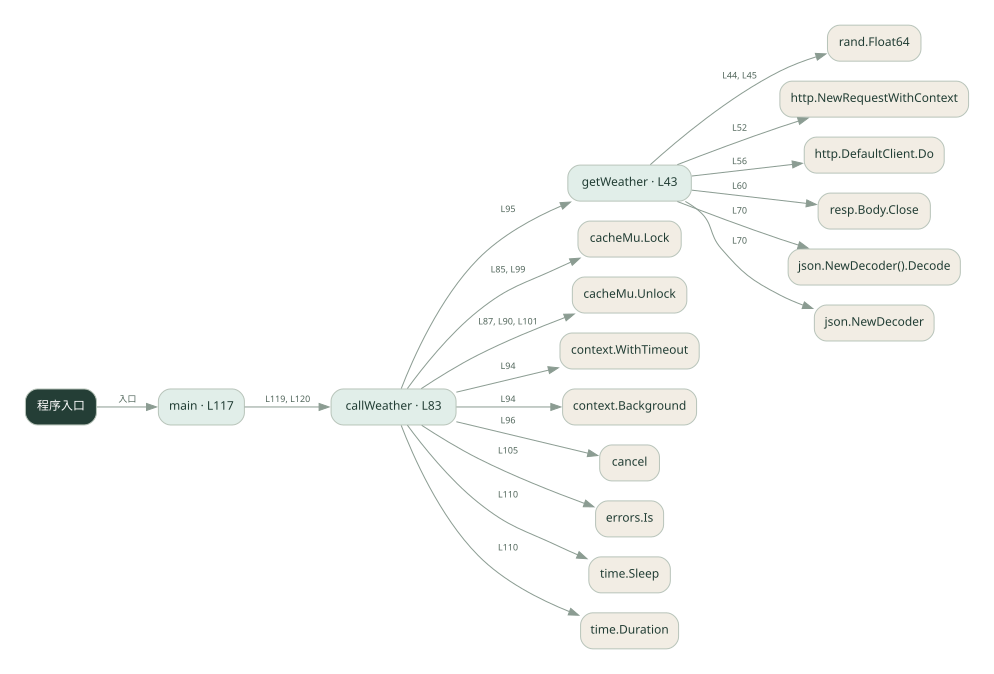

1-8 · 全课程第 8 节
工具超时与重试
robust_tools.go
源码快照 f01f4553555d · 静态解析 · 2026-09-10
01 / 要完成的事
给天气工具增加失败重试、超时处理和结果缓存。
02 / 为什么要做
外部请求会失败或重复发生，不能让一次偶发错误终止整个流程。
03 / 当前代码状态
用 context.WithTimeout 和带 context 的 HTTP 请求访问真实天气接口；缓存 map 由互斥锁保护。超时取消与 Python 线程等待超时机制不同。
存在外部服务或模型依赖；执行前需按源文件配置依赖和凭据，可能联网或产生 API 费用。 本次只做静态解析，没有运行练习，也没有替你填写或修改原代码。
04 / 调用图
打开大图 ↗实线：源码中的直接调用；虚线：函数引用/注册、动态调用或按方法名推断的候选。L 是调用所在源码行号。箭头不表示执行顺序或每次必经；分支、循环、异步调度及框架内部调用需结合源码。灰色是外部/未解析目标，橙色是动态分发；省略 print、len 和常规容器操作以减少干扰。孤立函数可能尚未接入。

先从 main（程序入口） 出发，沿箭头找到本文件函数，再查看外部调用或动态分发。右侧调用清单保留所有静态调用点，能回到原文件逐行对照。
05 / 函数定位
| 函数 / 定义行 | 职责（源码注释） | 内部调用 |
|---|---|---|
getWeatherL43 | 真实天气接口（Open-Meteo 免费），超时靠 context | rand.Float64, fmt.Errorf, http.NewRequestWithContext, http.DefaultClient.Do, resp.Body.Close, json.NewDecoder().Decode, json.NewDecoder, fmt.Sprintf |
callWeatherL83 | 以源码函数体为准；下列调用展示其依赖。 | cacheMu.Lock, cacheMu.Unlock, context.WithTimeout, context.Background, getWeather, cancel, fmt.Sprintf, errors.Is, fmt.Printf, time.Sleep, time.Duration |
mainL117 | 以源码函数体为准；下列调用展示其依赖。 | fmt.Println, callWeather |
这样做的优点
临时故障可恢复，相同查询命中缓存时减少重复请求。
代价与局限
重试增加延迟；按城市缓存会过期。缓存查询结果不等于保证写操作幂等。
适用场景
只读查询、可以安全重复的工具。
不宜直接照搬
扣款、发信等有副作用的操作，除非另有业务幂等机制。
动手检验理解
让第一次请求失败，检查重试次数；再查同城，检查缓存是否省去请求。
有未实现位置时先预测，再补齐验证。能启动不等于逻辑正确。
查看全部 31 个静态调用 / 引用点
| 调用方 | 目标 | 源码行 | 类型 |
|---|---|---|---|
| getWeather | rand.Float64 | 44 | 调用 |
| getWeather | rand.Float64 | 45 | 调用 |
| getWeather | fmt.Errorf | 46 | 调用 |
| getWeather | http.NewRequestWithContext | 52 | 调用 |
| getWeather | http.DefaultClient.Do | 56 | 调用 |
| getWeather | resp.Body.Close | 60 | 调用 |
| getWeather | fmt.Errorf | 62 | 调用 |
| getWeather | json.NewDecoder().Decode | 70 | 调用 |
| getWeather | json.NewDecoder | 70 | 调用 |
| getWeather | fmt.Sprintf | 74 | 调用 |
| callWeather | cacheMu.Lock | 85 | 调用 |
| callWeather | cacheMu.Unlock | 87 | 调用 |
| callWeather | cacheMu.Unlock | 90 | 调用 |
| callWeather | context.WithTimeout | 94 | 调用 |
| callWeather | context.Background | 94 | 调用 |
| callWeather | getWeather | 95 | 调用 |
| callWeather | cancel | 96 | 调用 |
| callWeather | cacheMu.Lock | 99 | 调用 |
| callWeather | cacheMu.Unlock | 101 | 调用 |
| callWeather | fmt.Sprintf | 102 | 调用 |
| callWeather | errors.Is | 105 | 调用 |
| callWeather | fmt.Printf | 106 | 调用 |
| callWeather | fmt.Printf | 108 | 调用 |
| callWeather | time.Sleep | 110 | 调用 |
| callWeather | time.Duration | 110 | 调用 |
| callWeather | fmt.Sprintf | 114 | 调用 |
| main | fmt.Println | 118 | 调用 |
| main | fmt.Println | 119 | 调用 |
| main | callWeather | 119 | 调用 |
| main | fmt.Println | 120 | 调用 |
| main | callWeather | 120 | 调用 |